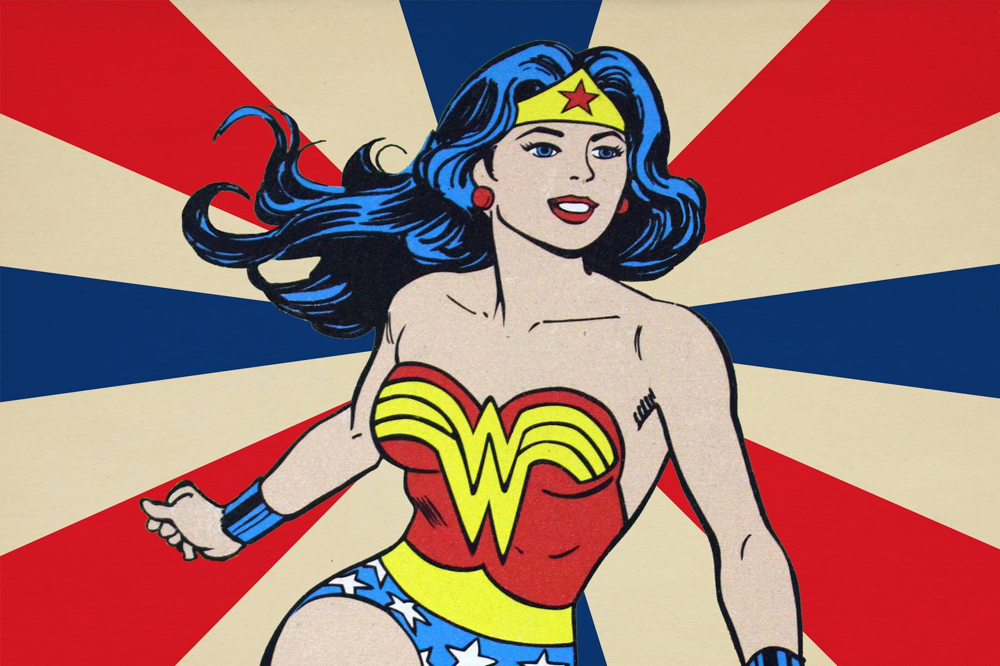

About Wonder Woman
Wonder Woman's origin story (from Golden to Bronze Age) relates that she was sculpted from clay by her mother Queen Hippolyta and was given a life as an Amazon, along with superhuman powers as gifts by the Greek gods.
Wonder Woman and her friends
Wonder Woman's Characteristics
- She's a powerful leader
- She is a warrior
- She has stamina and speed
Wonder Woman's Friends
Steven Rockwell Trevor is a fictional character appearing in American comic books published by DC Comics, commonly in association with the superhero Wonder Woman. The character was created by William Moulton Marston and first appeared in All Star Comics #8 (December 1941). Click on the links below to read more about them.s